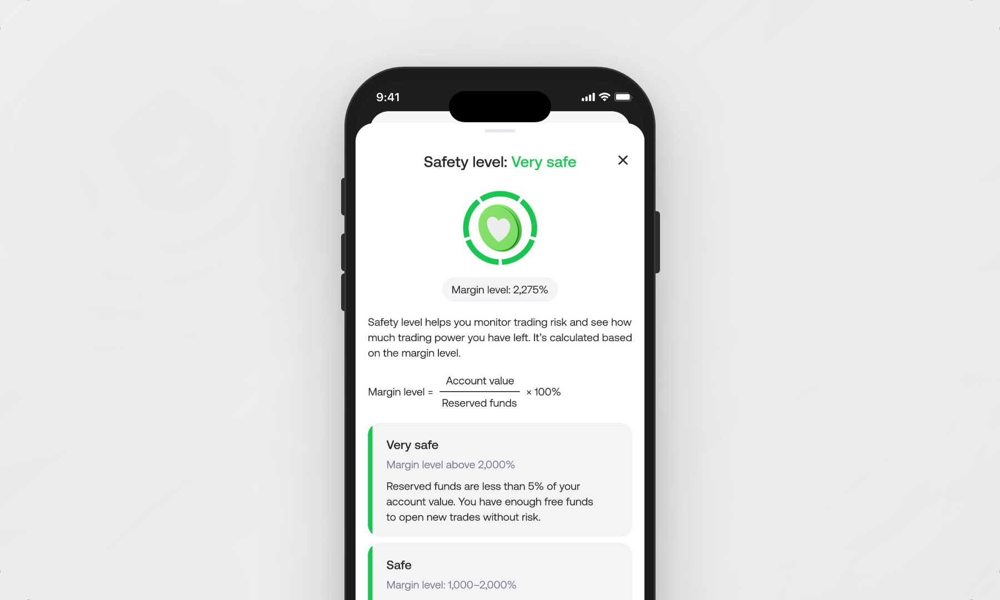

Safety Level

The Challenge
Most of our users are new to trading and usually start with small initial deposits. However, not all assets are suitable for small deposits, and with one or two wrong decisions users can easily lose their entire balance within minutes.
To help prevent this, we introduced a concept that reflects the overall health of a user's account — the Safety Level.
Process
We worked closely with the analytics team to understand how much users typically deposit and how much they spend on their first trades. With the help of the engineering team, we created several Safety Levels — each one indicating how much free balance a user has left and how much they can safely allocate to a new trade.
To communicate this clearly, we designed a Safety Level widget that appears in different areas of the platform. Depending on the context, the widget adapts both its content and design to give users the most relevant information at that particular stage of their trading journey.
During the design process, I researched other platforms in the industry to see how they explain similar risks to users. Surprisingly, very few products focus on protecting users' funds or clearly explain that even a single trade can lead to a significant loss.
Another important challenge was finding the right balance between warning users and not discouraging them from trading. When users open a trade, it was important to also highlight the potential reward of higher-risk trades — so we designed an additional widget specifically for the trade-opening flow.
From a UX writing perspective, it was essential to maintain consistent terminology across all widgets so users could easily understand how the entire Safety Level system works as a whole.
Outcome


The final metrics are still being prepared by the analytics team. However, we are already seeing positive qualitative feedback from users in app store reviews, where they mention the intuitive interface and helpful guidance when making trades.
The main metric we focused on was user retention after the first trade — encouraging users to return and open a second, third, and subsequent trades. Early indicators show that the Safety Level system positively influences this behavior: users are less likely to leave immediately and tend to stay engaged with the app longer.